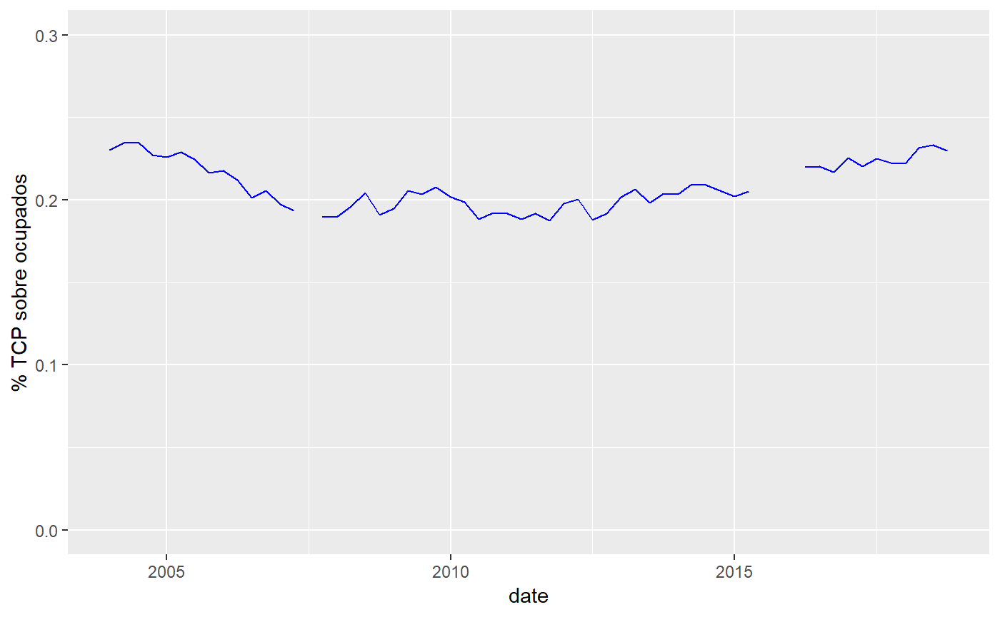
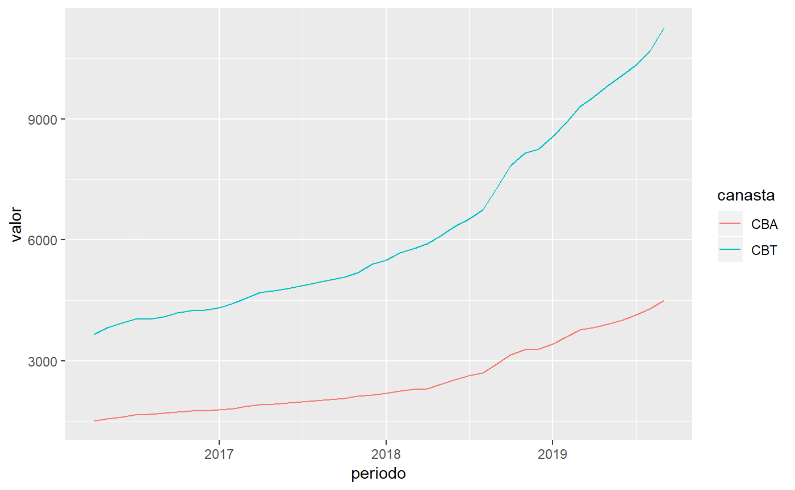

eph
vignettes/eph.Rmd
eph.RmdEl paquete eph tiene como objetivo facilitar el trabajo de les usuaries que trabajen con los microdatos de la Encuesta Permanente de Hogares. Este tutorial busca ejemplificar un pipeline de trabajo más o menos típico para mostrar el uso de las funciones del paquete.
Para instalar la versión estable del paquete usar:
install.packages('eph')Para la versión en desarrollo:
# install.packages('devtools') si no tiene instalado devtools
devtools::install_github("holatam/eph")get_microdata()
library(eph)
library(tidyverse)
#> -- Attaching packages ------------------------------------- tidyverse 1.2.1 --
#> v ggplot2 3.1.0 v purrr 0.3.3
#> v tibble 2.1.3 v dplyr 0.8.3
#> v tidyr 1.0.0 v stringr 1.4.0
#> v readr 1.3.1 v forcats 0.4.0
#> -- Conflicts ---------------------------------------- tidyverse_conflicts() --
#> x dplyr::filter() masks stats::filter()
#> x dplyr::lag() masks stats::lag()Obtengamos la base de microdatos de individuos para el tercer trimestre de 2018:
ind_3_18 <- get_microdata(year=2018, trimester=2, type='individual')Puede verse que la función requiere tres argumentos básicos:
year: entero con el año de la encuesta que se desea descargartrimester: entero con el trimestre (este argumento es válido para la EPH continua, 2004-actualidad)type: character "individual", para descargar la base de invidividuos y "hogar", para la de hogar.Si se deseara descargar una base de la EPH puntual, será necesario reemplazar el argumento trimester por wave que define la onda de la EPH puntual que se desea descargar. Por ejemplo, si se buscara descargar la base individual de la segunda onda del año 2002, debería escribirse
ind_2_02 <- get_microdata(year=2001, wave=2, type='individual')organize_labels()
Es posible etiquetar de forma automática el dataset llamando a la función organize_labels():
ind_3_18 <- organize_labels(df=ind_3_18, type='individual')La función toma dos argumentos:
df: el data.frame que se quiere etiquetar, debe ser producto de get_microdata()
type: string; cuál es el tipo de datatset que se quiere etiquetar, "individual" o "hogar"
Descarguemos y etiquetemos la base de hogares del 3 trimestre de 2018. Podemos hacer uso de los %>% pipes de magritte:
hog_3_18 <- get_microdata(year=2018, trimester=3, type='hogar') %>%
organize_labels(., type='hogar')calculate_tabulates()
Uno de los problemas habituales en el trabajo con la EPH es la dificultad de los diferentes softwares comerciales para la construcción de tablas de contigencia y/o distribuciones de frecuencia ponderadas. El paquete lo resuelve mediante la función calculate_tabulates():
calculate_tabulates(base=ind_3_18, x='ESTADO', y='CH04', weights = 'PONDIH',
add.totals='row', add.percentage='col')
#> ESTADO/CH04
#> Entrevista individual no realizada (no respuesta al cuestionario individual)
#> Ocupado
#> Desocupado
#> Inactivo
#> Menor de 10 anios.
#> Total
#> Varon Mujer
#> 0.0% 0.0%
#> 49.0% 35.4%
#> 4.7% 4.3%
#> 30.3% 46.7%
#> 16.0% 13.6%
#> 100.0% 100.0%Los argumentos principales de la función son:
base: un data.frame proveniente de get_microdata()
x: string con el nombre de la variable a tabulary: otro string (opcional) con el nombre de una segunda variable, para una tabla de doble entrada. Tiene que ser de igual largo que x
weights: string con el nombre de la variable que contiene los pesosadd.totals: agrega valores por row, col o both
add.percentage: calcula porcentajes por row, col o both
Así, si quisiéramos la misma tabla sin ponderar:
calculate_tabulates(base=ind_3_18, x='ESTADO', y='CH04',
add.totals='row', add.percentage='col')
#> ESTADO/CH04
#> Entrevista individual no realizada (no respuesta al cuestionario individual)
#> Ocupado
#> Desocupado
#> Inactivo
#> Menor de 10 anios.
#> Total
#> Varon Mujer
#> 0.1% 0.1%
#> 48.5% 34.0%
#> 3.6% 3.3%
#> 32.0% 48.8%
#> 15.9% 13.8%
#> 100.0% 100.0%organize_panels()
Otra práctica común y necesaria en el trabajo con microdatos de la EPH es la generación de paneles de datos, es decir, el seguimiento de los registros a lo largo de las diferentes bases de la encuesta. Esto puede generarse en eph con la función organize_panels()
bases <- list(i_2018_1=get_microdata(year=2018, trimester=1, type='individual'),
i_2018_2=get_microdata(year=2018, trimester=2, type='individual'),
i_2018_3=get_microdata(year=2018, trimester=3, type='individual'),
i_2018_4=get_microdata(year=2018, trimester=4, type='individual')
)pool <- organize_panels(bases=bases, variables=c('ESTADO'),
window='anual')
#> Warning in bind_rows_(x, .id): Unequal factor levels: coercing to character
#> Warning in bind_rows_(x, .id): binding character and factor vector,
#> coercing into character vector
#> Warning in bind_rows_(x, .id): binding character and factor vector,
#> coercing into character vector
#> Warning in bind_rows_(x, .id): Unequal factor levels: coercing to character
#> Warning in bind_rows_(x, .id): binding character and factor vector,
#> coercing into character vector
#> Warning in bind_rows_(x, .id): binding character and factor vector,
#> coercing into character vector
#> Warning in bind_rows_(x, .id): Unequal factor levels: coercing to character
#> Warning in bind_rows_(x, .id): binding character and factor vector,
#> coercing into character vector
#> Warning in bind_rows_(x, .id): binding character and factor vector,
#> coercing into character vector
#> Warning in bind_rows_(x, .id): Unequal factor levels: coercing to character
#> Warning in bind_rows_(x, .id): binding character and factor vector,
#> coercing into character vector
#> Warning in bind_rows_(x, .id): binding character and factor vector,
#> coercing into character vector
#> Warning in bind_rows_(x, .id): binding character and factor vector,
#> coercing into character vector
#> Warning in bind_rows_(x, .id): binding character and factor vector,
#> coercing into character vector
#> Warning in bind_rows_(x, .id): binding character and factor vector,
#> coercing into character vector
#> Warning in bind_rows_(x, .id): binding character and factor vector,
#> coercing into character vector
#> Warning in bind_rows_(x, .id): binding character and factor vector,
#> coercing into character vector
#> Warning in bind_rows_(x, .id): binding character and factor vector,
#> coercing into character vector
#> Warning in bind_rows_(x, .id): binding character and factor vector,
#> coercing into character vector
#> Warning in bind_rows_(x, .id): binding character and factor vector,
#> coercing into character vector
#> Joining, by = c("CODUSU", "NRO_HOGAR", "COMPONENTE", "Id_Trimestre")pool
#> # A tibble: 0 x 17
#> # ... with 17 variables: CODUSU <chr>, NRO_HOGAR <int>, COMPONENTE <int>,
#> # ANO4 <int>, TRIMESTRE <int>, CH04 <int>, CH06 <int>, ESTADO <int>,
#> # Trimestre <chr>, Id_Trimestre <dbl>, ANO4_t1 <int>,
#> # TRIMESTRE_t1 <int>, CH04_t1 <int>, CH06_t1 <int>, ESTADO_t1 <int>,
#> # Trimestre_t1 <chr>, consistencia <lgl>La función nos devuelve un data.frame en el cual cada fila es un registro y se agregan variables en formato long de las variables de interés. Lo que hace detrás de bambalinas es concatenar todas las bases espeficadas en el argumento list= y hacer un join, extrayendo aquellos registros que aparecen medidos en las diferentes bases. La columna consistencia evalúa si en cada observación cambia el sexo o la edad de la persona durante en las dos ondas previas o posteriores.
Es sencillo formatear este dataset en formato tidy:
CHEQUEAR ESTO….
Veamos ahora un ejemplo un poco más complejo. Queremos generar una serie completa acerca del peso de los TCP sobre los ocupados. Para ello, tenemos que iterar sobre los años y trimestres que querramos incluir en el cálculo y, para cada año-trimestre calcular la razón ponderada de los TPC sobre total de ocupados:
\(SO_{t} = \frac{\sum_{i=1}^n w_{i}TCP_{i}}{\sum_{i=1}^n w_{i}OCUP_{i}}\)
year <- 2004:2018
trimester <- 1:4
wave<-NA
type<-'individual'
df <- as_tibble(expand.grid(year, trimester, wave, type))
colnames(df)<-c('year','trimester','wave', 'type')
get_data <- function(year, trimester, wave=NA, type){
indicator<-list()
d <- get_microdata(year=year,
trimester=trimester,
type=type,
wave=wave)
indicator$year<-year
indicator$trimester<-trimester
if (nrow(d) == 0){
indicator$indic<-NA
}
if (year==2007 & (trimester ==2 | trimester == 4)) {
indicator$ind<-sum(d[d$cat_ocup==2,]$pondera, na.rm=TRUE) /sum(d[d$estado==1,]$pondera, na.rm=TRUE)
}
else {
indicator$ind<-sum(d[d$CAT_OCUP==2,]$PONDERA, na.rm=TRUE) /sum(d[d$ESTADO==1,]$PONDERA, na.rm=TRUE)
}
return(indicator)
}
df <- df %>%
dplyr::mutate(microdata=
purrr::pmap(list('year' = year,
'trimester' = trimester,
'wave' = wave,
'type' = type),
.f = get_data)
)
df
#> # A tibble: 60 x 5
#> year trimester wave type microdata
#> <int> <int> <lgl> <fct> <list>
#> 1 2004 1 NA individual <named list [3]>
#> 2 2005 1 NA individual <named list [3]>
#> 3 2006 1 NA individual <named list [3]>
#> 4 2007 1 NA individual <named list [3]>
#> 5 2008 1 NA individual <named list [3]>
#> 6 2009 1 NA individual <named list [3]>
#> 7 2010 1 NA individual <named list [3]>
#> 8 2011 1 NA individual <named list [3]>
#> 9 2012 1 NA individual <named list [3]>
#> 10 2013 1 NA individual <named list [3]>
#> # ... with 50 more rowsEsto nos devuelve una tibble que contiene los indicadores de año, trimestre y tipo de dataset. A su vez, el campo microdata contiene nuestros indicadores. Solamente, tenemos que iterar sobre cada fila con map() y pegarlos uno debajo de otro con bind_rows(). Luego, emprolijamos un poco el dataset y lo ploteamos.
df %>%
select(microdata) %>%
map_df(.,bind_rows) %>%
select(-indic) %>%
mutate(date=lubridate::parse_date_time(paste(year, trimester,sep='-'), '%y%q')) %>%
ggplot() +
geom_line(aes(x=date,y=ind), color='blue') +
scale_y_continuous(limits=c(0,0.3)) +
labs(y='% TCP sobre ocupados')
Un objetivo del paquete eph, es lograr automatizar el cálculo de pobreza e indigencia del INDEC para las bases trimestrales1. El gran problema es que no existe información publicada fuera de los informes de prensa en formato pdf sobre los valores de las canastas básicas y alimentarias.
No obstante, hemos desarrollado dos funciones que, de encontrarse disponibles dichos datos, podrían calcular de forma automática los valores de pobreza e indigencia. Mostraremos un ejemplo de juguete con dos datasets de la CABA y sus respectivos valores de canastas.
bases <- dplyr::bind_rows(toybase_individual_2016_03,toybase_individual_2016_04)Existen dos funciones núcleo:
lineas <- get_poverty_lines()
lineas %>% head()
#> # A tibble: 6 x 4
#> periodo CBA ICE CBT
#> <dttm> <dbl> <dbl> <dbl>
#> 1 2016-04-01 00:00:00 1515. 2.42 3664.
#> 2 2016-05-01 00:00:00 1561. 2.45 3831.
#> 3 2016-06-01 00:00:00 1614. 2.44 3943.
#> 4 2016-07-01 00:00:00 1666. 2.42 4034.
#> 5 2016-08-01 00:00:00 1675. 2.41 4042.
#> 6 2016-09-01 00:00:00 1711. 2.39 4090.Esta función descarga los valores de las canastas alimentaria, básica (CBA y CBT) y la inversa del coeficiente de Engels… perdón, Engel (ICE) de la serie provista por INDEC. Esta es la serie para GBA, y es la que publica regularmente INDEC.
lineas %>%
select(-ICE) %>%
gather(canasta, valor, -periodo) %>%
ggplot() +
geom_line(aes(x=periodo, y=valor, col=canasta))
Para el calculo de la Pobreza e Indigence se utilizan canastas regionales, que sólo aparecen en los informes Técnicos.
A modo de ejemplo, en la librería eph se encuentra la base canastas_reg_example con la información necesaria para realizar el cálculo
canastas_reg_example
#> # A tibble: 12 x 5
#> region periodo CBA CBT codigo
#> <chr> <chr> <dbl> <dbl> <dbl>
#> 1 Cuyo 2016.3 1509. 3872. 42
#> 2 Cuyo 2016.4 1570. 4030. 42
#> 3 GBA 2016.3 1684. 4053. 1
#> 4 GBA 2016.4 1756. 4232. 1
#> 5 Noreste 2016.3 1513. 3414. 41
#> 6 Noreste 2016.4 1568. 3539. 41
#> 7 Noroeste 2016.3 1472. 3292. 40
#> 8 Noroeste 2016.4 1525. 3412. 40
#> 9 Pampeana 2016.3 1676. 4034. 43
#> 10 Pampeana 2016.4 1746. 4209. 43
#> 11 Patagonia 2016.3 1735. 4742. 44
#> 12 Patagonia 2016.4 1813. 4963. 44A su vez, también se encuentra la tabla de adulto_equivalente que permite construir la cantidad de adultos equivalentes a nivel hogar, para multiplicar al mismo por la canasta regional correspondiente, a fin de definir la línea a nivel hogar.
adulto_equivalente
#> CH04 CH06 adequi
#> 1 1 -1 0.35
#> 2 1 1 0.37
#> 3 1 2 0.46
#> 4 1 3 0.51
#> 5 1 4 0.55
#> 6 1 5 0.60
#> 7 1 6 0.64
#> 8 1 7 0.66
#> 9 1 8 0.68
#> 10 1 9 0.69
#> 11 2 -1 0.35
#> 12 2 1 0.37
#> 13 2 2 0.46
#> 14 2 3 0.51
#> 15 2 4 0.55
#> 16 2 5 0.60
#> 17 2 6 0.64
#> 18 2 7 0.66
#> 19 2 8 0.68
#> 20 2 9 0.69
#> 21 1 10 0.79
#> 22 1 11 0.82
#> 23 1 12 0.85
#> 24 1 13 0.90
#> 25 1 14 0.96
#> 26 1 15 1.00
#> 27 1 16 1.03
#> 28 1 17 1.04
#> 29 2 10 0.70
#> 30 2 11 0.72
#> 31 2 12 0.74
#> 32 2 13 0.76
#> 33 2 14 0.76
#> 34 2 15 0.77
#> 35 2 16 0.77
#> 36 2 17 0.77
#> 37 1 18 1.02
#> 38 1 19 1.02
#> 39 1 20 1.02
#> 40 1 21 1.02
#> 41 1 22 1.02
#> 42 1 23 1.02
#> 43 1 24 1.02
#> 44 1 25 1.02
#> 45 1 26 1.02
#> 46 1 27 1.02
#> 47 1 28 1.02
#> 48 1 29 1.02
#> 49 1 30 1.00
#> 50 1 31 1.00
#> 51 1 32 1.00
#> 52 1 33 1.00
#> 53 1 34 1.00
#> 54 1 35 1.00
#> 55 1 36 1.00
#> 56 1 37 1.00
#> 57 1 38 1.00
#> 58 1 39 1.00
#> 59 1 40 1.00
#> 60 1 41 1.00
#> 61 1 42 1.00
#> 62 1 43 1.00
#> 63 1 44 1.00
#> 64 1 45 1.00
#> 65 1 46 1.00
#> 66 1 47 1.00
#> 67 1 48 1.00
#> 68 1 49 1.00
#> 69 1 50 1.00
#> 70 1 51 1.00
#> 71 1 52 1.00
#> 72 1 53 1.00
#> 73 1 54 1.00
#> 74 1 55 1.00
#> 75 1 56 1.00
#> 76 1 57 1.00
#> 77 1 58 1.00
#> 78 1 59 1.00
#> 79 1 60 1.00
#> 80 1 61 0.83
#> 81 1 62 0.83
#> 82 1 63 0.83
#> 83 1 64 0.83
#> 84 1 65 0.83
#> 85 1 66 0.83
#> 86 1 67 0.83
#> 87 1 68 0.83
#> 88 1 69 0.83
#> 89 1 70 0.83
#> 90 1 71 0.83
#> 91 1 72 0.83
#> 92 1 73 0.83
#> 93 1 74 0.83
#> 94 1 75 0.83
#> 95 2 18 0.76
#> 96 2 19 0.76
#> 97 2 20 0.76
#> 98 2 21 0.76
#> 99 2 22 0.76
#> 100 2 23 0.76
#> 101 2 24 0.76
#> 102 2 25 0.76
#> 103 2 26 0.76
#> 104 2 27 0.76
#> 105 2 28 0.76
#> 106 2 29 0.76
#> 107 2 30 0.77
#> 108 2 31 0.77
#> 109 2 32 0.77
#> 110 2 33 0.77
#> 111 2 34 0.77
#> 112 2 35 0.77
#> 113 2 36 0.77
#> 114 2 37 0.77
#> 115 2 38 0.77
#> 116 2 39 0.77
#> 117 2 40 0.77
#> 118 2 41 0.77
#> 119 2 42 0.77
#> 120 2 43 0.77
#> 121 2 44 0.77
#> 122 2 45 0.77
#> 123 2 46 0.76
#> 124 2 47 0.76
#> 125 2 48 0.76
#> 126 2 49 0.76
#> 127 2 50 0.76
#> 128 2 51 0.76
#> 129 2 52 0.76
#> 130 2 53 0.76
#> 131 2 54 0.76
#> 132 2 55 0.76
#> 133 2 56 0.76
#> 134 2 57 0.76
#> 135 2 58 0.76
#> 136 2 59 0.76
#> 137 2 60 0.76
#> 138 2 61 0.67
#> 139 2 62 0.67
#> 140 2 63 0.67
#> 141 2 64 0.67
#> 142 2 65 0.67
#> 143 2 66 0.67
#> 144 2 67 0.67
#> 145 2 68 0.67
#> 146 2 69 0.67
#> 147 2 70 0.67
#> 148 2 71 0.67
#> 149 2 72 0.67
#> 150 2 73 0.67
#> 151 2 74 0.67
#> 152 2 75 0.67
#> 153 2 76 0.63
#> 154 2 77 0.63
#> 155 2 78 0.63
#> 156 2 79 0.63
#> 157 2 80 0.63
#> 158 2 81 0.63
#> 159 2 82 0.63
#> 160 2 83 0.63
#> 161 2 84 0.63
#> 162 2 85 0.63
#> 163 2 86 0.63
#> 164 2 87 0.63
#> 165 2 88 0.63
#> 166 2 89 0.63
#> 167 2 90 0.63
#> 168 2 91 0.63
#> 169 2 92 0.63
#> 170 2 93 0.63
#> 171 2 94 0.63
#> 172 2 95 0.63
#> 173 2 96 0.63
#> 174 2 97 0.63
#> 175 2 98 0.63
#> 176 2 99 0.63
#> 177 2 100 0.63
#> 178 2 101 0.63
#> 179 2 102 0.63
#> 180 2 103 0.63
#> 181 2 104 0.63
#> 182 2 105 0.63
#> 183 2 106 0.63
#> 184 2 107 0.63
#> 185 2 108 0.63
#> 186 2 109 0.63
#> 187 2 110 0.63
#> 188 1 76 0.74
#> 189 1 77 0.74
#> 190 1 78 0.74
#> 191 1 79 0.74
#> 192 1 80 0.74
#> 193 1 81 0.74
#> 194 1 82 0.74
#> 195 1 83 0.74
#> 196 1 84 0.74
#> 197 1 85 0.74
#> 198 1 86 0.74
#> 199 1 87 0.74
#> 200 1 88 0.74
#> 201 1 89 0.74
#> 202 1 90 0.74
#> 203 1 91 0.74
#> 204 1 92 0.74
#> 205 1 93 0.74
#> 206 1 94 0.74
#> 207 1 95 0.74
#> 208 1 96 0.74
#> 209 1 97 0.74
#> 210 1 98 0.74
#> 211 1 99 0.74
#> 212 1 100 0.74
#> 213 1 101 0.74
#> 214 1 102 0.74
#> 215 1 103 0.74
#> 216 1 104 0.74
#> 217 1 105 0.74
#> 218 1 106 0.74
#> 219 1 107 0.74
#> 220 1 108 0.74
#> 221 1 109 0.74
#> 222 1 110 0.74La función calculate_poverty calcula la pertenencia a situaciones de pobreza e indigencia a nivel de los individuos siguiendo la metodología de línea:
bases <- dplyr::bind_rows(toybase_individual_2016_03,toybase_individual_2016_04)
base_pobreza <- calculate_poverty(base = bases, basket = canastas_reg_example,print_summary=TRUE)
#> # A tibble: 2 x 4
#> # Groups: ANO4 [1]
#> ANO4 TRIMESTRE Tasa_pobreza Tasa_indigencia
#> <int> <int> <dbl> <dbl>
#> 1 2016 3 0.0296 0.0136
#> 2 2016 4 0.0324 0.0122base_pobreza %>%
select(CODUSU,ITF,region,adequi_hogar,CBA_hogar,CBT_hogar,situacion) %>%
sample_n(10)
#> # A tibble: 10 x 7
#> CODUSU ITF region adequi_hogar CBA_hogar CBT_hogar situacion
#> <chr> <int> <chr> <dbl> <dbl> <dbl> <chr>
#> 1 TQRMNOQSTHKNRT~ 21000 GBA 1 1756. 4232. no_pobre
#> 2 TQRMNOPVQHMMLL~ 37000 GBA 1 1684. 4053. no_pobre
#> 3 TQRMNOSWSHMOLS~ 10800 Cuyo 1 1509. 3872. no_pobre
#> 4 TQRMNOSUTHJMKR~ 12000 Noroes~ 1 1525. 3412. no_pobre
#> 5 TQRMNOTRYHKMLP~ 16900 Patago~ 0.77 1396. 3821. no_pobre
#> 6 TQRMNOQRVHKMLN~ 0 GBA 1.27 2139. 5148. NA
#> 7 TQRMNOSPRHKKKM~ 40000 Cuyo 1.02 1539. 3950. no_pobre
#> 8 TQRMNOQXXHLNLU~ 18000 Cuyo 0.76 1147. 2943. no_pobre
#> 9 TQRMNOPRVHMLQS~ 0 GBA 1 1756. 4232. NA
#> 10 TQRMNOPVQHLMMO~ 60000 Pampea~ 0.76 1327. 3199. no_pobreEl calculo oficial se realiza sobre bases semestrales no publicadas↩